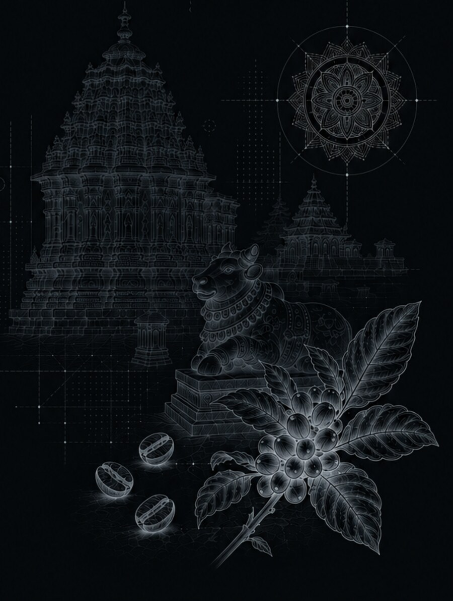

Rooted in Hassan.
Drawn to solving things properly.

I grew up in Hassan, a district in Karnataka known for two very different things: the Hoysala temples at Belur and Halebidu, carved with a level of detail that still doesn't look real up close, and the coffee estates in its hills, where nothing about a good harvest can be rushed.

As a kid, I was always pulled toward art, not because I was especially gifted at it, but because I liked making things that didn't exist yet. Hassan wasn't a design town. But it respected precision and patience in equal measure, and that stayed with me longer than I realized.
The plan was never graphic design, it was animation. I wanted to build worlds that moved. But I was never a naturally gifted fine artist, my drawings from imagination were average at best. What I was actually good at was figuring out why something wasn't working, and fixing it.
Graphic design turned out to be exactly that. Less about raw drawing talent, more about solving a problem until the solution looked inevitable. That's the part that stuck: not that I could draw the best, but that I could think a brief through properly.
Hassan taught me that nothing good gets forced.
The coffee growing in its hills doesn't rush, the soil, the shade, the harvest timing all have to be solved for, one at a time, before you get a cup that works. Branding is the same kind of patience. Every choice is a small problem solved quietly, so the final thing feels inevitable instead of decorated.
I'm a Visual & Branding Designer based in Bengaluru, currently a Graphic Designer II at GeekyAnts, where I lead brand identity design across UI/UX and marketing touchpoints for international clients, translating complex briefs into logo suites, style guides and motion identity systems.
Before that, I designed cross-company campaign work with Microsoft and Logitech at Avientek, and spent over three years at BYJU'S collaborating directly with Disney and Osmo on interactive game stages and printable educational products, while mentoring junior designers to a 30% lift in team output quality.
My background spans print, digital and motion, working primarily in Figma and Adobe Creative Suite, always with a systems-level eye toward keeping a brand cohesive across every touchpoint.